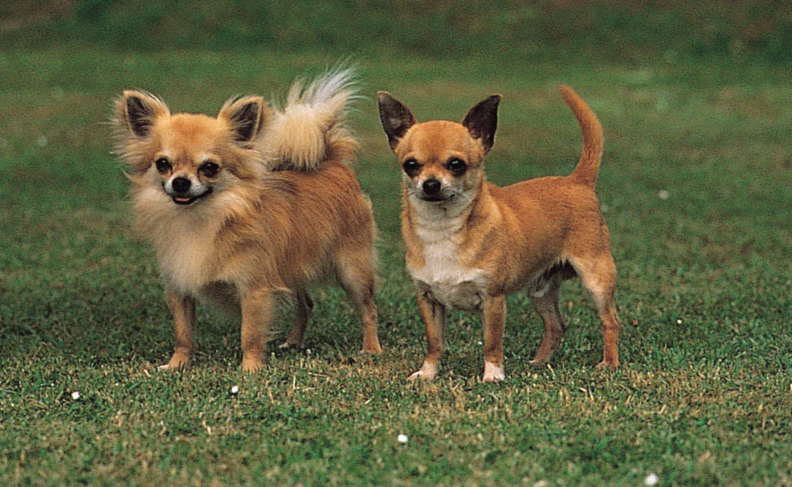
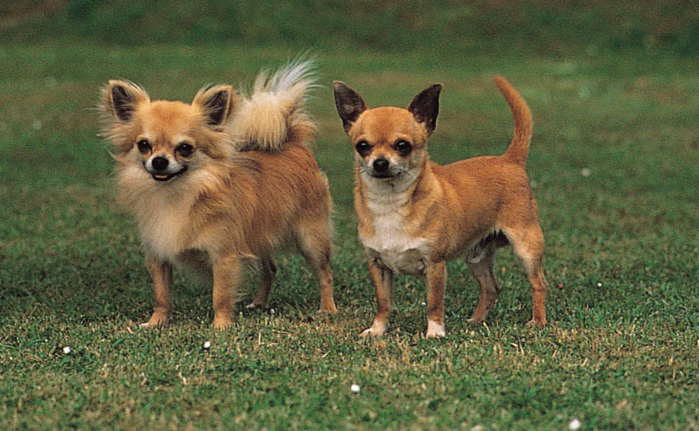

Why Blog for Dogs?
 



Blogging about dogs is more than just sharing cute pictures (though we love those too!). It's about building a community of dog lovers, sharing valuable information, and celebrating the incredible bond between humans and their canine companions. Through our blog, we aim to educate, entertain, and inspire dog owners and enthusiasts around the world. From training tips to health advice, fun DIY projects to heartwarming stories, our blog is a treasure trove of canine content.
Blogs
Max, my 11-year-old canine companion, is a lovable sleepyhead who spends most of his day in dreamland. Despite his blindness, he navigates life with enthusiasm, especially when it comes to mealtime. Max has a jealous streak, growing possessive whenever I come home with the scent of other dogs. His favorite pastime is curling up for a cozy nap with me, proving that even in his golden years, he's still the ultimate snuggle buddy.

Lightning, the regal chihuahua mix, lives up to his electrifying name with a distinctive lightning bolt pattern adorning his back. This pint-sized protector is fiercely devoted to his owner, ready to face any perceived threat with unwavering bravery. Despite his diminutive stature, Lightning carries himself with the air of royalty, expecting nothing less than five-star treatment. He dines exclusively from the hands of his devoted subjects...